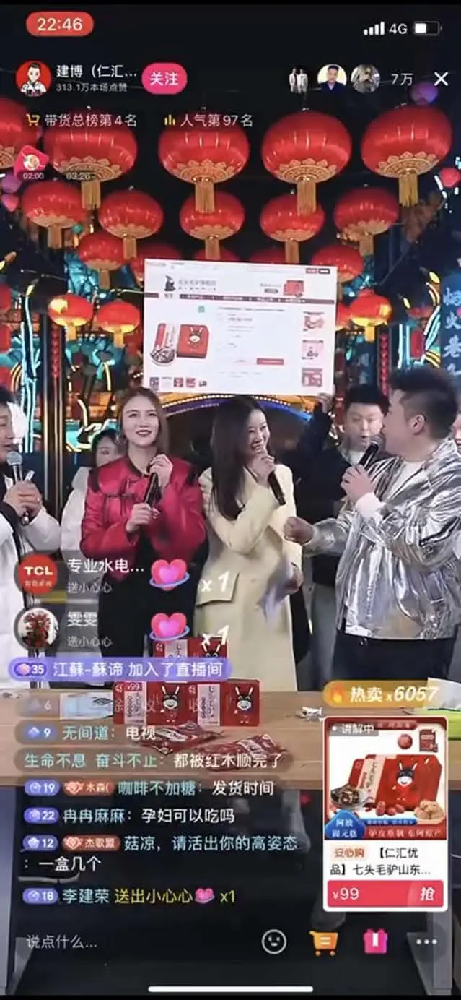
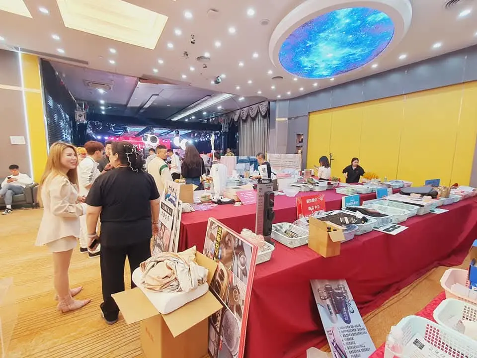
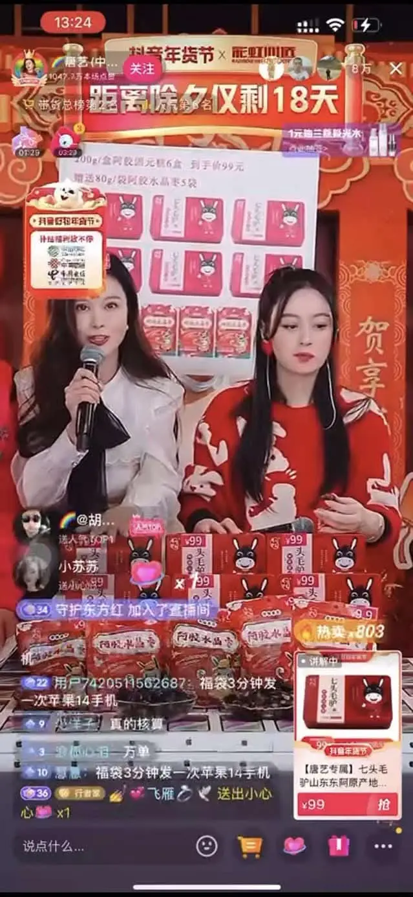
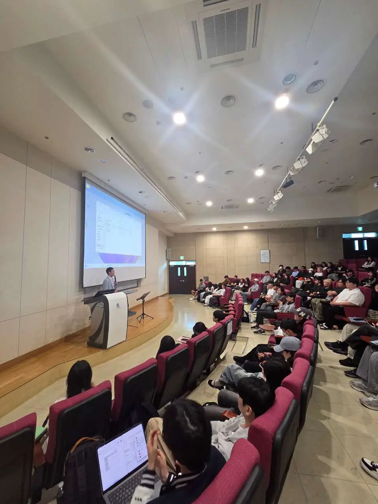

방송 세션Live Session直播场次
플랫폼 내 라이브 방송 운영 기록.A recorded live session on the platform.平台内直播运营记录。
INFLUENCER & EDUCATION
중국 내 지명도 높은 인플루언서 및 라이브커머스 팀과의 협업 경험을 국내 대학·교육기관의 도우인 실무 교육으로 연결합니다.Experience with established influencers and live-commerce teams in China is translated into practical Douyin education for universities and institutions in Korea.将与中国具有影响力的达人及直播电商团队的合作经验，转化为面向韩国高校与教育机构的抖音实务教育。

인플루언서의 인지도만으로 협업을 결정하지 않습니다. 제품 적합성, 시청자 성향, 방송 방식과 판매 환경을 함께 살펴 브랜드에 맞는 협업 범위를 구성합니다.Reach alone does not define a collaboration. We review product fit, audience, broadcast format and commerce conditions to shape an appropriate scope.合作并非只看达人知名度。我们综合评估产品匹配度、受众、直播方式与销售环境，为品牌设计合适的合作范围。

제품 검토, 콘텐츠 기획, 라이브 방송과 판매 연계를 포함한 현지 협업 사례입니다.A local collaboration spanning product review, content planning, live broadcast and sales linkage.涵盖产品评估、内容策划、直播及销售衔接的本地合作案例。
사례 자세히 보기View Full Case查看完整案例 ↘방송 세션, 진행 화면과 제품 노출 등 라이브커머스 협업의 과정을 실제 화면으로 정리했습니다.Platform records showing broadcast sessions, live presentation and product exposure.以平台实录呈现直播场次、主持画面与产品展示等合作过程。

플랫폼 내 라이브 방송 운영 기록.A recorded live session on the platform.平台内直播运营记录。
시청자에게 제품을 설명하는 진행 화면.Live product presentation for viewers.面向观众的产品直播介绍画面。

콘텐츠 안에서 제품과 판매 정보를 연결.Linking product and sales information within content.在内容中衔接产品与销售信息。
국내 대학과 교육기관에서 중국 플랫폼 구조, 도우인 콘텐츠 기획, 라이브커머스와 인플루언서 실무를 사례 중심으로 교육합니다.For universities and institutions in Korea, we teach China platform structures, Douyin content planning, live commerce and influencer practice through real cases.面向韩国高校与教育机构，以实际案例讲授中国平台结构、抖音内容策划、直播电商及达人实务。

교육 대상과 과정 수준에 맞춘 중국 플랫폼 실무 교육.China-platform education tailored to audience and course level.依据学员与课程层级设计的中国平台实务教育。

플랫폼 설명을 넘어 콘텐츠와 커머스 운영 사례를 함께 다룹니다.Beyond platform theory, the curriculum covers content and commerce operations.不止平台理论，同时涵盖内容与商业运营案例。
교육, 콘텐츠 제작, 브랜드 협업과 해외 채널을 연결하는 크리에이터 프로그램을 준비하고 있습니다. 국가와 플랫폼의 특성에 맞춰 장기적으로 활동할 수 있는 기반을 구축합니다.We are developing creator programs that connect education, content production, brand collaboration and overseas channels, building foundations for sustained activity across markets and platforms.我们正在推进连接教育、内容制作、品牌合作及海外渠道的创作者项目，并依据不同国家与平台特点构建可持续发展的基础。
플랫폼과 시장에 맞는 기본 역량과 콘텐츠 방향.Core capabilities and content direction for each platform and market.适应各平台与市场的基础能力及内容方向。
크리에이터의 강점과 브랜드 과제를 연결한 협업.Collaboration connecting creator strengths with brand objectives.连接创作者优势与品牌课题的合作。
국가별 콘텐츠 채널과 커머스 기회를 단계적으로 연결.Step-by-step connection to content channels and commerce opportunities.逐步衔接各国内容渠道与商业机会。
제품, 교육 대상과 목표 플랫폼을 알려주시면 적합한 진행 범위를 검토합니다.Share the product, audience and target platform—we will review the right scope.请告知产品、教育对象与目标平台，我们将评估合适的执行范围。